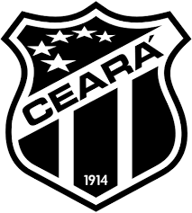
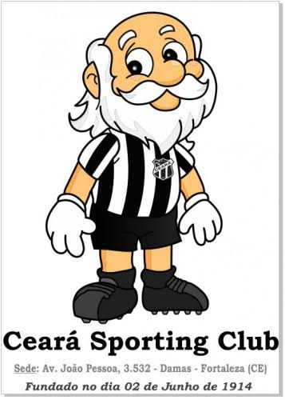

O Ceará Sporting Club, conhecido popularmente como Vovô por ser o clube mais antigo da capital cearense, é um dos maiores e mais tradicionais times de futebol do Nordeste do Brasil.
Fundação: 2 de junho de 1914 (como Rio Branco Foot-ball Club, adotando o nome atual em 1915).
Mascote: Vovô
Cores oficiais: Preto e branco (Alvinegro)
Estádios mandantes: Arena Castelão e Estádio Presidente Vargas (PV)
Centro de Treinamento: Cidade Vozão (em Itaitinga-CE) e Sede de Porangabuçu (Vovozão)
